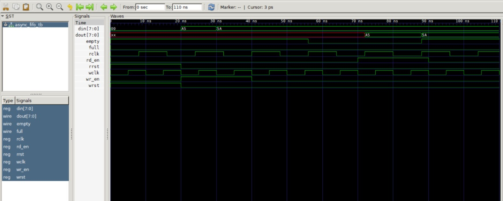
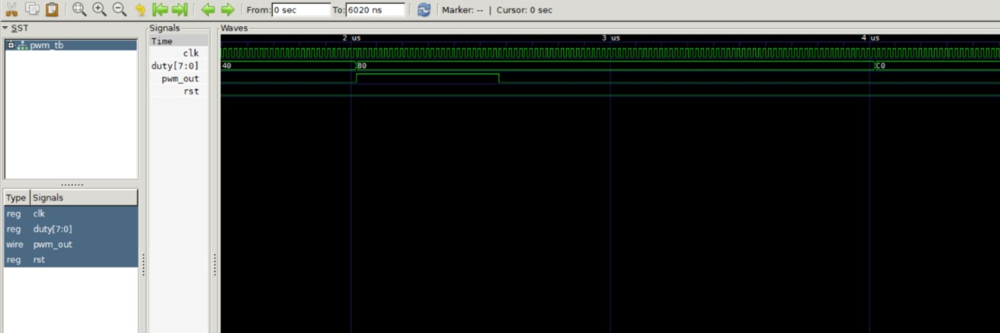
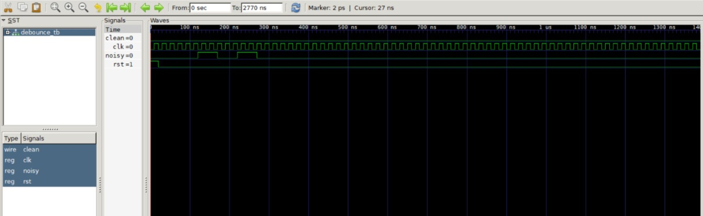
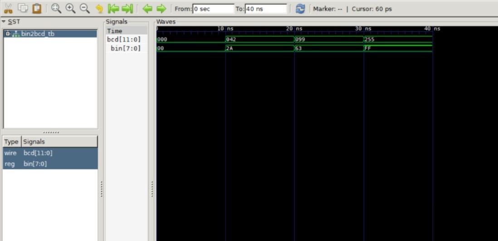

🧩 Code :Design + Testbench
1. Half Adder
half_adder.v
module half_adder (
input a, b,
output sum, carry
);
assign sum = a ^ b;
assign carry = a & b;
endmodulehalf_adder_tb.v
`timescale 1ns/1ps
module half_adder_tb;
reg a, b;
wire sum, carry;
half_adder uut (a, b, sum, carry);
initial begin
$dumpfile("ha.vcd");
$dumpvars(0, half_adder_tb);
$monitor("a=%b b=%b sum=%b carry=%b", a, b, sum, carry);
a=0; b=0; #10;
a=0; b=1; #10;
a=1; b=0; #10;
a=1; b=1; #10;
$finish;
end
endmodule2. Full Adder (Structural)
full_adder.v
module full_adder (
input a, b, cin,
output sum, cout
);
wire s1, c1, c2;
half_adder ha1 (a, b, s1, c1);
half_adder ha2 (s1, cin, sum, c2);
assign cout = c1 | c2;
endmodulefull_adder_tb.v
`timescale 1ns/1ps
module full_adder_tb;
reg a, b, cin;
wire sum, cout;
full_adder uut (a, b, cin, sum, cout);
initial begin
$dumpfile("fa.vcd");
$dumpvars(0, full_adder_tb);
$monitor("a=%b b=%b cin=%b sum=%b cout=%b", a, b, cin, sum, cout);
a=0; b=0; cin=0; #10; a=0; b=0; cin=1; #10;
a=0; b=1; cin=0; #10; a=0; b=1; cin=1; #10;
a=1; b=0; cin=0; #10; a=1; b=0; cin=1; #10;
a=1; b=1; cin=0; #10; a=1; b=1; cin=1; #10;
$finish;
end
endmodule📐 Synthesizable Verilog Coding Guidelines (10 Rules)
| # | Rule | Explanation |
|---|---|---|
| 1 | Use always @(posedge clk or posedge rst) for sequential logic | Edge‑sensitive clock + async reset – synthesizable |
| 2 | Use always @(*) for combinational logic | Auto‑sensitivity, safe |
| 3 | Use non‑blocking (<=) for sequential logic | Prevents race conditions |
| 4 | Use blocking (=) for combinational logic | Immediate assignment |
| 5 | Never mix = and <= for the same variable in the same block | Avoids simulation‑synthesis mismatch |
| 6 | Avoid initial in RTL | Use reset instead |
| 7 | Avoid #delay in RTL | Ignored by synthesis |
| 8 | Loops must have constant bounds | for(i=0; i<8; i++) – OK; variable bounds not synthesizable |
| 9 | Complete if / case (no inferred latches) | Always include else and default |
| 10 | Register outputs of large combinational blocks | Improves timing, reduces path length |
🚀 Simulation Instructions
To simulate any of the above designs using Icarus Verilog and GTKWave:
- Save the design (
.v) and testbench (_tb.v) in the same folder. - Open terminal in that folder and run:
iverilog -o out.vvp module.v module_tb.v
vvp out.vvp
gtkwave dump.vcd - View waveforms and console output.
Day 14 – Advanced Verilog: Parameters, Generate Loops, and Synchronous FIFO
Topic: Reusable RTL design with parameters, generate, and a classic FIFO example.
After mastering basic modules (half adder to ALU), advanced constructs that make Verilog code reusable, scalable, and efficient.
1. Parameterised Modules – Write Once, Use Any Width
A parameter allows you to change the behaviour or bus width without rewriting the module. This is essential for building libraries.
Example: 2:1 multiplexer that works for any bus width
module mux2_param #(parameter WIDTH = 8) (
input [WIDTH-1:0] a, b,
input sel,
output [WIDTH-1:0] y
);
assign y = sel ? b : a;
endmoduleInstantiation with different widths:
mux2_param #(.WIDTH(4)) mux4 (a4, b4, sel, y4);
mux2_param #(.WIDTH(16)) mux16 (a16, b16, sel, y16);Advantages: Reusable, less code, fewer errors. Synthesis tools flatten the parameter correctly.
2. Generate Loops – Create Repetitive Logic Automatically
The generate block with a for loop creates multiple instances or logic at compile time. It is perfect for regular structures like adders, decoders, or memory arrays.
Example: 4‑bit ripple carry adder using generate (assumes a full_adder module exists)
module rca4_generate #(parameter N=4) (
input [N-1:0] a, b,
input cin,
output [N-1:0] sum,
output cout
);
wire [N:0] c;
assign c[0] = cin;
generate
genvar i;
for (i = 0; i < N; i = i + 1) begin : gen_adder
full_adder fa (
.a(a[i]), .b(b[i]), .cin(c[i]),
.sum(sum[i]), .cout(c[i+1])
);
end
endgenerate
assign cout = c[N];
endmodulegenvaris a special variable only for generate loops.- The label
gen_addercreates a named block (useful for hierarchy). - Loop bounds must be constant (synthesizable).
3. Synchronous FIFO (First‑In‑First‑Out) – A Classic Design
A FIFO is a buffer memory with separate read and write pointers. It is used for data buffering, clock domain crossing, and pipeline elasticity.
Specifications: Depth = 8, width = 8 bits.
- Inputs:
clk,rst,wr_en,rd_en,din[7:0] - Outputs:
dout[7:0],full,empty - Write when
wr_en & !full→ store atwr_ptr, increment pointer and count. - Read when
rd_en & !empty→ output fromrd_ptr, increment pointer, decrement count.
module fifo_sync #(parameter DEPTH=8, WIDTH=8) (
input clk, rst,
input wr_en, rd_en,
input [WIDTH-1:0] din,
output reg [WIDTH-1:0] dout,
output full, empty
);
reg [WIDTH-1:0] mem [0:DEPTH-1];
reg [$clog2(DEPTH)-1:0] wr_ptr, rd_ptr;
reg [$clog2(DEPTH):0] count; // extra bit for full/empty
always @(posedge clk or posedge rst) begin
if (rst) begin
wr_ptr <= 0;
rd_ptr <= 0;
count <= 0;
end else begin
if (wr_en && !full) begin
mem[wr_ptr] <= din;
wr_ptr <= wr_ptr + 1;
count <= count + 1;
end
if (rd_en && !empty) begin
dout <= mem[rd_ptr];
rd_ptr <= rd_ptr + 1;
count <= count - 1;
end
end
end
assign full = (count == DEPTH);
assign empty = (count == 0);
endmoduleTestbench idea: Write 8 bytes, read them back, verify order. The FIFO is synthesizable and widely used in industry.
4. What I Pushed to GitHub Today
mux2_param.vandmux2_param_tb.vrca4_generate.vandrca4_generate_tb.vfifo_sync.vand a simple testbench- This
day14.htmlpage
5. Key Takeaways
- Parameters make modules reusable – change width without rewriting.
- Generate loops automate repetitive instantiation – perfect for regular structures.
- Synchronous FIFO is a fundamental building block; understanding pointers and full/empty logic is essential for any digital designer.
- All code follows synthesizable rules: no
initial, no#delay, constant bounds.
Day 15 – Advanced RTL Modules (Synthesizable Verilog)
Topic: Practical modules for real designs.
1. Clock Divider (even division)
module clk_div #(parameter DIV = 2) (
input clk, rst,
output reg clk_out
);
localparam MAX = DIV/2;
reg [$clog2(MAX)-1:0] count;
always @(posedge clk or posedge rst) begin
if (rst) begin count <= 0; clk_out <= 0; end
else if (count == MAX-1) begin count <= 0; clk_out <= ~clk_out; end
else count <= count + 1;
end
endmoduleUse: Generate slower clocks (e.g., 1 Hz from 50 MHz). Only even division.
2. Edge Detector
module edge_detector (
input clk, rst, sig,
output reg rise, fall, both
);
reg sig_d;
always @(posedge clk or posedge rst) begin
if (rst) sig_d <= 0;
else sig_d <= sig;
end
always @(*) begin
rise = sig & ~sig_d;
fall = ~sig & sig_d;
both = rise | fall;
end
endmoduleUse: Interrupts, start‑of‑packet detection, button triggers (with debouncing).
3. Parameterized Synchronous FIFO
module fifo_param #(parameter DEPTH=8, WIDTH=8) (
input clk, rst,
input wr_en, rd_en,
input [WIDTH-1:0] din,
output reg [WIDTH-1:0] dout,
output full, empty, almost_full, almost_empty
);
localparam PTR_WIDTH = $clog2(DEPTH);
reg [WIDTH-1:0] mem [0:DEPTH-1];
reg [PTR_WIDTH-1:0] wr_ptr, rd_ptr;
reg [PTR_WIDTH:0] count;
always @(posedge clk or posedge rst) begin
if (rst) begin wr_ptr <= 0; rd_ptr <= 0; count <= 0; end
else begin
if (wr_en && !full) begin mem[wr_ptr] <= din; wr_ptr <= wr_ptr + 1; count <= count + 1; end
if (rd_en && !empty) begin dout <= mem[rd_ptr]; rd_ptr <= rd_ptr + 1; count <= count - 1; end
end
end
assign full = (count == DEPTH);
assign empty = (count == 0);
assign almost_full = (count >= DEPTH-1);
assign almost_empty = (count <= 1);
endmoduleUse: Data buffering, clock domain crossing (asynchronous version later).
4. Reset Synchronizer
module reset_sync (
input clk, async_rst,
output reg sync_rst
);
reg rst_meta;
always @(posedge clk or posedge async_rst) begin
if (async_rst) {rst_meta, sync_rst} <= 2'b11;
else {rst_meta, sync_rst} <= {1'b0, rst_meta};
end
endmoduleUse: Safe release of asynchronous reset (avoids metastability).
5. Gray Code Counter
module gray_counter #(WIDTH=4) (
input clk, rst, en,
output reg [WIDTH-1:0] gray
);
reg [WIDTH-1:0] bin;
always @(posedge clk or posedge rst) begin
if (rst) bin <= 0;
else if (en) bin <= bin + 1;
end
always @(*) gray = bin ^ (bin >> 1);
endmoduleUse: Asynchronous FIFO pointers, rotary encoders.
6. LFSR (4‑bit, polynomial x⁴ + x³ + 1)
module lfsr4 (
input clk, rst, en,
output reg [3:0] lfsr
);
wire feedback = lfsr[3] ^ lfsr[2];
always @(posedge clk or posedge rst) begin
if (rst) lfsr <= 4'b0001;
else if (en) lfsr <= {lfsr[2:0], feedback};
end
endmoduleUse: Pseudo‑random generation, BIST, scrambling.
7. BCD Counter (0–9)
module bcd_counter (
input clk, rst, en,
output reg [3:0] count,
output reg carry
);
always @(posedge clk or posedge rst) begin
if (rst) count <= 0;
else if (en) begin
if (count == 9) count <= 0;
else count <= count + 1;
end
end
assign carry = (en && count == 9);
endmoduleUse: Digital clocks, seven‑segment displays, frequency counters.
8. Johnson Counter (4‑bit)
module johnson4 (
input clk, rst,
output reg [3:0] q
);
always @(posedge clk or posedge rst) begin
if (rst) q <= 4'b0000;
else q <= {~q[0], q[3:1]};
end
endmoduleUse: Sequence generators, address decoders, LED chasers.
9. Barrel Shifter (rotate left)
module barrel_shifter #(WIDTH=8) (
input [WIDTH-1:0] in,
input [2:0] amt,
output [WIDTH-1:0] out
);
assign out = {in, in} >> (WIDTH - amt);
endmoduleUse: ALU shift/rotate operations, DSP bit‑reordering.
Day 17 – FIFO Variants, Memory Blocks & Clock Domain Crossing
10 synthesizable Verilog designs
📋 10 Topics Covered
- Synchronous FIFO (parameterized)
- Asynchronous FIFO (Gray‑coded pointers)
- Dual‑Port RAM
- Single‑Port RAM
- Register File (8x8)
- ROM using case
- Stack (LIFO)
- Content Addressable Memory (CAM) – conceptual
- Gray Code Counter
- Clock Domain Crossing Synchronizer (2‑FF)
1. Synchronous FIFO (Parameterized)
module fifo_sync #(parameter DEPTH=8, WIDTH=8) (
input clk, rst,
input wr_en, rd_en,
input [WIDTH-1:0] din,
output reg [WIDTH-1:0] dout,
output full, empty, almost_full, almost_empty
);
localparam PTR_WIDTH = $clog2(DEPTH);
reg [WIDTH-1:0] mem [0:DEPTH-1];
reg [PTR_WIDTH-1:0] wr_ptr, rd_ptr;
reg [PTR_WIDTH:0] count;
always @(posedge clk or posedge rst) begin
if (rst) begin wr_ptr <= 0; rd_ptr <= 0; count <= 0; end
else begin
if (wr_en && !full) begin mem[wr_ptr] <= din; wr_ptr <= wr_ptr + 1; count <= count + 1; end
if (rd_en && !empty) begin dout <= mem[rd_ptr]; rd_ptr <= rd_ptr + 1; count <= count - 1; end
end
end
assign full = (count == DEPTH);
assign empty = (count == 0);
assign almost_full = (count >= DEPTH-1);
assign almost_empty = (count <= 1);
endmodule2. Asynchronous FIFO (Gray‑coded pointers)
Full implementation omitted for brevity – requires Gray code counters and synchronisers. Concept: write and read pointers converted to Gray code before crossing clock domains.
3. Dual‑Port RAM
module dual_port_ram #(DEPTH=8, WIDTH=8) (
input clk,
input we_a, we_b,
input [WIDTH-1:0] din_a, din_b,
input [($clog2(DEPTH))-1:0] addr_a, addr_b,
output reg [WIDTH-1:0] dout_a, dout_b
);
reg [WIDTH-1:0] mem [0:DEPTH-1];
always @(posedge clk) begin
if (we_a) mem[addr_a] <= din_a;
dout_a <= mem[addr_a];
if (we_b) mem[addr_b] <= din_b;
dout_b <= mem[addr_b];
end
endmodule4. Single‑Port RAM
module single_port_ram #(DEPTH=8, WIDTH=8) (
input clk, we,
input [WIDTH-1:0] din,
input [($clog2(DEPTH))-1:0] addr,
output reg [WIDTH-1:0] dout
);
reg [WIDTH-1:0] mem [0:DEPTH-1];
always @(posedge clk) begin
if (we) mem[addr] <= din;
dout <= mem[addr];
end
endmodule5. Register File (8x8)
module reg_file_8x8 (
input clk, we,
input [2:0] raddr_a, raddr_b, waddr,
input [7:0] din,
output [7:0] dout_a, dout_b
);
reg [7:0] regs [0:7];
always @(posedge clk) if (we) regs[waddr] <= din;
assign dout_a = regs[raddr_a];
assign dout_b = regs[raddr_b];
endmodule6. ROM using case
module rom_case #(ADDR_WIDTH=3, DATA_WIDTH=8) (
input [ADDR_WIDTH-1:0] addr,
output reg [DATA_WIDTH-1:0] data
);
always @(*) begin
case (addr)
3'b000: data = 8'hA5;
3'b001: data = 8'h5A;
default: data = 8'h00;
endcase
end
endmodule7. Stack (LIFO)
module stack #(DEPTH=8, WIDTH=8) (
input clk, rst,
input push, pop,
input [WIDTH-1:0] din,
output reg [WIDTH-1:0] dout,
output full, empty
);
reg [WIDTH-1:0] mem [0:DEPTH-1];
reg [2:0] ptr;
always @(posedge clk or posedge rst) begin
if (rst) ptr <= 0;
else if (push && !full) begin mem[ptr] <= din; ptr <= ptr + 1; end
else if (pop && !empty) begin ptr <= ptr - 1; dout <= mem[ptr-1]; end
end
assign full = (ptr == DEPTH);
assign empty = (ptr == 0);
endmodule8. Content Addressable Memory (CAM) – Conceptual
Search by data, returns address. Used in cache tags and TLBs.
9. Gray Code Counter
module gray_counter #(WIDTH=4) (
input clk, rst, en,
output reg [WIDTH-1:0] gray
);
reg [WIDTH-1:0] bin;
always @(posedge clk or posedge rst) begin
if (rst) bin <= 0;
else if (en) bin <= bin + 1;
end
always @(*) gray = bin ^ (bin >> 1);
endmodule10. Clock Domain Crossing (CDC) Synchronizer (2‑FF)
module cdc_sync (
input clk_dest, rst,
input async_signal,
output reg sync_signal
);
reg meta;
always @(posedge clk_dest or posedge rst) begin
if (rst) {meta, sync_signal} <= 2'b00;
else {meta, sync_signal} <= {async_signal, meta};
end
endmoduleDay 18 – Advanced RTL Theory: Asynchronous FIFO, Memory, LFSR, Pipeline
Complete reference – concepts, equations, and real‑world use.
1. Asynchronous FIFO (Gray‑Coded Pointers)
Used to transfer data between different clock domains. The write and read clocks are independent. Pointers are converted to Gray code to avoid metastability.
- Gray code property: only one bit changes between consecutive values → safe for cross‑domain synchronisation.
- Full flag: compare write pointer (Gray) with synchronized read pointer (Gray) – also check that the most significant bits differ but the rest match.
- Empty flag: compare read pointer (Gray) with synchronized write pointer (Gray).
- Memory array: dual‑port RAM (write on wclk, read on rclk).
Real‑world use: Multi‑clock systems (USB, PCIe, Ethernet MACs), data bridges between processor and peripheral.
2. Dual‑Port RAM
Two independent read/write ports. Can perform simultaneous access to different addresses.
module dual_port_ram #(DEPTH=8, WIDTH=8) (
input clk,
input we_a, we_b,
input [WIDTH-1:0] din_a, din_b,
input [($clog2(DEPTH))-1:0] addr_a, addr_b,
output reg [WIDTH-1:0] dout_a, dout_b
);
reg [WIDTH-1:0] mem [0:DEPTH-1];
always @(posedge clk) begin
if (we_a) mem[addr_a] <= din_a;
dout_a <= mem[addr_a];
if (we_b) mem[addr_b] <= din_b;
dout_b <= mem[addr_b];
end
endmoduleReal‑world use: Register files, video frame buffers, CPU cache tag RAM.
3. Single‑Port RAM
module single_port_ram #(DEPTH=8, WIDTH=8) (
input clk, we,
input [WIDTH-1:0] din,
input [($clog2(DEPTH))-1:0] addr,
output reg [WIDTH-1:0] dout
);
reg [WIDTH-1:0] mem [0:DEPTH-1];
always @(posedge clk) begin
if (we) mem[addr] <= din;
dout <= mem[addr];
end
endmoduleReal‑world use: Microcontroller scratchpad, simple buffer memory.
4. Register File (8x8)
module reg_file_8x8 (
input clk, we,
input [2:0] raddr_a, raddr_b, waddr,
input [7:0] din,
output [7:0] dout_a, dout_b
);
reg [7:0] regs [0:7];
always @(posedge clk) if (we) regs[waddr] <= din;
assign dout_a = regs[raddr_a];
assign dout_b = regs[raddr_b];
endmoduleReal‑world use: General‑purpose register bank in RISC processors (ARM, RISC‑V).
5. ROM using case
module rom_case #(ADDR_WIDTH=3, DATA_WIDTH=8) (
input [ADDR_WIDTH-1:0] addr,
output reg [DATA_WIDTH-1:0] data
);
always @(*) begin
case (addr)
3'b000: data = 8'hA5;
3'b001: data = 8'h5A;
3'b010: data = 8'hFF;
default: data = 8'h00;
endcase
end
endmoduleReal‑world use: Boot ROM, sine/cosine lookup tables, constant data.
6. Stack (LIFO)
module stack #(DEPTH=8, WIDTH=8) (
input clk, rst,
input push, pop,
input [WIDTH-1:0] din,
output reg [WIDTH-1:0] dout,
output full, empty
);
reg [WIDTH-1:0] mem [0:DEPTH-1];
reg [2:0] ptr;
always @(posedge clk or posedge rst) begin
if (rst) ptr <= 0;
else if (push && !full) begin mem[ptr] <= din; ptr <= ptr + 1; end
else if (pop && !empty) begin ptr <= ptr - 1; dout <= mem[ptr-1]; end
end
assign full = (ptr == DEPTH);
assign empty = (ptr == 0);
endmoduleReal‑world use: Function call stack, expression evaluation in calculators.
7. Content Addressable Memory (CAM)
Search by data, returns matching address. Parallel comparison.
Real‑world use: TLB (Translation Lookaside Buffer), cache tag memory, router MAC tables.
8. Gray Code Counter
Binary counter → Gray conversion: gray = bin ^ (bin >> 1). Used for FIFO pointers.
module gray_counter #(WIDTH=4) (
input clk, rst, en,
output reg [WIDTH-1:0] gray
);
reg [WIDTH-1:0] bin;
always @(posedge clk or posedge rst) begin
if (rst) bin <= 0;
else if (en) bin <= bin + 1;
end
always @(*) gray = bin ^ (bin >> 1);
endmodule9. Clock Domain Crossing (CDC) Synchronizer (2‑FF)
module cdc_sync (
input clk_dest, rst,
input async_signal,
output reg sync_signal
);
reg meta;
always @(posedge clk_dest or posedge rst) begin
if (rst) {meta, sync_signal} <= 2'b00;
else {meta, sync_signal} <= {async_signal, meta};
end
endmoduleMetastability probability: reduced to MTBF ~ e^(t/τ) / (f_clk * f_data). Two stages are enough for most applications.
10. Linear Feedback Shift Register (LFSR)
Pseudo‑random sequence generator. Maximal length: 2ⁿ‑1 states (non‑zero seed).
module lfsr4 (
input clk, rst, en,
output reg [3:0] lfsr
);
wire feedback = lfsr[3] ^ lfsr[2];
always @(posedge clk or posedge rst) begin
if (rst) lfsr <= 4'b0001;
else if (en) lfsr <= {lfsr[2:0], feedback};
end
endmoduleReal‑world use: BIST (Built‑In Self‑Test), scrambling, CRC generation, fast counters.
11. Pipelined ALU / Pipeline Basics
Break combinational logic into stages separated by registers. Increases throughput: one result per clock cycle after initial latency.
Trade‑off: more registers, potential hazards, but much higher clock frequency possible.
Day 19 – Logic Synthesis: From RTL to Gates
Complete reference – definitions, flow, constraints, synthesizable subset, and common pitfalls.
1. What is Logic Synthesis?
Logic synthesis is the process of converting a Register‑Transfer Level (RTL) description of a digital circuit (written in Verilog or VHDL) into a gate‑level netlist composed of standard cells (AND, OR, NOT, flip‑flops, etc.) from a technology library. It also performs optimization to meet area, speed, and power constraints.
Why it matters: Without synthesis, RTL is only simulation. Synthesis produces the actual netlist that goes to placement and routing, and eventually to silicon.
2. Inputs to Synthesis
- RTL code – must be synthesizable (subset of Verilog).
- Technology library – contains cell descriptions: function, area, delay (dependent on output load), power, and timing arcs.
- Constraints – define design goals: clock frequency, input/output delays, false paths, multicycle paths. Usually written in SDC (Synopsys Design Constraints).
3. Synthesis Flow – Three Main Steps
- Translation: Parses RTL into an internal representation (e.g., AND/INVERTER graphs).
- Logic optimization: Applies Boolean algebra laws to reduce area and delay. Example:
!(a & b) → (~a | ~b)(DeMorgan). - Technology mapping: Replaces optimized generic gates with cells from the target library. It also chooses cell drive strengths.
4. Constraints – The Language of Timing (SDC)
Constraints tell the synthesizer how fast the design must run and the external environment.
# Clock period = 10 ns → 100 MHz
create_clock -name clk -period 10.0 [get_ports clk]
# Input delay: external logic takes 3 ns before clk edge
set_input_delay -clock clk -max 3.0 [get_ports din*]
# Output delay: external logic needs 2.5 ns after clk edge
set_output_delay -clock clk -max 2.5 [get_ports dout*]
# False paths (no timing check, e.g., between unrelated clocks)
set_false_path -from [get_ports test_mode]5. Synthesizable Verilog Subset
| Construct | Synthesizable | Notes |
|---|---|---|
module, endmodule | ✅ Yes | |
input, output, inout | ✅ Yes | |
wire, reg | ✅ Yes | |
assign | ✅ Yes | Continuous assignment |
always @(posedge clk or posedge rst) | ✅ Yes | Sequential logic |
always @(*) | ✅ Yes | Combinational logic (auto‑sensitivity) |
if, else, case, casez | ✅ Yes | Must be complete (no inferred latches) |
for loop with constant bound | ✅ Yes | Example: for(i=0; i<8; i=i+1) |
parameter, localparam | ✅ Yes | |
initial | ❌ No | Only for testbenches |
#delay | ❌ No | Ignored by synthesis |
while, repeat (variable bound) | ❌ No | |
fork/join | ❌ No | |
force, release | ❌ No |
6. Common Synthesis Issues & How to Fix Them
| Issue | Cause | Solution |
|---|---|---|
| Inferred latch | Missing else or default in combinational always block. | Assign a value to the output in all branches. |
| Combinational loop | Feedback path without a flip‑flop. | Break the loop; use sequential logic if needed. |
| Multiple drivers | Same net assigned in two always blocks. | Combine logic or use tri‑state buffers. |
| Clock gating glitches | AND/OR gate on clock line. | Use dedicated clock‑gating cell or enable pin on flip‑flop. |
| Unintentional register | Signals assigned in some but not all paths. | Ensure every path assigns the signal. |
7. Optimization Trade‑offs – Area vs. Speed vs. Power
- Area minimization: Use smaller gates, share logic, reduce registers. May increase delay.
- Speed (timing) optimization: Parallelise logic, use faster cells, buffer long wires. Increases area and power.
- Power optimization: Reduce switching activity, use low‑power cells, clock gating. May increase area.
- Synthesis tools allow you to set effort levels:
compile -map_effort high -area_effort medium.
8. Synthesis Example: D Flip‑flop with Enable
RTL code:
always @(posedge clk or posedge rst) begin
if (rst) q <= 0;
else if (en) q <= d;
endAfter technology mapping (simplified):
- One D flip‑flop (clock and asynchronous reset)
- One 2:1 multiplexer (carry‑enabled data path)
- Inverters and buffers as needed for timing
9. Synthesis Tools (Industry & Open Source)
- Synopsys Design Compiler – industry standard.
- Cadence Genus – modern, integrated with Innovus.
- Mentor (Siemens) Catapult – high‑level synthesis (HLS).
- Yosys – open‑source, popular for FPGA and small ASIC designs.
10. Synthesis vs. Simulation – Key Differences
| Aspect | Simulation | Synthesis |
|---|---|---|
| Timing model | Ideal (unit or zero delay) | Real gate delays (depends on load) |
| All language constructs | Yes | Only synthesizable subset |
| Initial blocks | Allowed | Not used (reset instead) |
| Loops | Any bound | Only constant‑bound loops |
| Purpose | Verify functionality | |
| Generate gate‑level netlist |
Day 20 – Asynchronous FIFO (Gray‑coded pointers)
Purpose: Safely transfer data between different clock domains.
🔹 Working Principle
- Problem: When multiple bits change at the same time across clock domains, metastability can occur.
- Solution: Use Gray code for pointers – only one bit changes per count. Write and read pointers are converted to Gray, synchronised with two‑flip‑flop synchronisers, then compared to generate full/empty flags.
- Dual‑port memory: Write on
wclk, read onrclk.
📊 Waveform Proof

Write two bytes (0xA5, 0x5A) on fast clock (100 MHz), read back on slower clock (62.5 MHz). Gray pointer transitions are clean – no metastability.
📁 Verilog Design (async_fifo.v)
module async_fifo #(
parameter DEPTH = 8,
parameter WIDTH = 8
) (
input wclk, wrst,
input rclk, rrst,
input wr_en, rd_en,
input [WIDTH-1:0] din,
output reg [WIDTH-1:0] dout,
output full, empty
);
localparam ADDR_WIDTH = $clog2(DEPTH);
reg [WIDTH-1:0] mem [0:DEPTH-1];
reg [ADDR_WIDTH:0] wr_ptr_bin, rd_ptr_bin;
reg [ADDR_WIDTH:0] wr_ptr_gray, rd_ptr_gray;
reg [ADDR_WIDTH:0] rd_ptr_sync1, rd_ptr_sync2, wr_ptr_sync1, wr_ptr_sync2;
// Write pointer
always @(posedge wclk or posedge wrst) begin
if (wrst) {wr_ptr_bin, wr_ptr_gray} <= 0;
else if (wr_en && !full) begin
wr_ptr_bin <= wr_ptr_bin + 1;
wr_ptr_gray <= (wr_ptr_bin + 1) ^ ((wr_ptr_bin + 1) >> 1);
end
end
// Read pointer
always @(posedge rclk or posedge rrst) begin
if (rrst) {rd_ptr_bin, rd_ptr_gray} <= 0;
else if (rd_en && !empty) begin
rd_ptr_bin <= rd_ptr_bin + 1;
rd_ptr_gray <= (rd_ptr_bin + 1) ^ ((rd_ptr_bin + 1) >> 1);
end
end
// Synchronise read pointer to write clock domain
always @(posedge wclk or posedge wrst) begin
if (wrst) {rd_ptr_sync2, rd_ptr_sync1} <= 0;
else {rd_ptr_sync2, rd_ptr_sync1} <= {rd_ptr_sync1, rd_ptr_gray};
end
wire [ADDR_WIDTH:0] rd_ptr_sync = rd_ptr_sync2;
// Synchronise write pointer to read clock domain
always @(posedge rclk or posedge rrst) begin
if (rrst) {wr_ptr_sync2, wr_ptr_sync1} <= 0;
else {wr_ptr_sync2, wr_ptr_sync1} <= {wr_ptr_sync1, wr_ptr_gray};
end
wire [ADDR_WIDTH:0] wr_ptr_sync = wr_ptr_sync2;
// Memory write
always @(posedge wclk)
if (wr_en && !full) mem[wr_ptr_bin[ADDR_WIDTH-1:0]] <= din;
// Memory read
always @(posedge rclk)
if (rd_en && !empty) dout <= mem[rd_ptr_bin[ADDR_WIDTH-1:0]];
// Full flag (write Gray vs synchronised read Gray, MSBs differ)
assign full = (wr_ptr_gray == {~rd_ptr_sync[ADDR_WIDTH:ADDR_WIDTH-1], rd_ptr_sync[ADDR_WIDTH-2:0]});
// Empty flag (read Gray vs synchronised write Gray)
assign empty = (rd_ptr_gray == wr_ptr_sync);
endmodule🧪 Testbench (async_fifo_tb.v)
`timescale 1ns/1ps
module async_fifo_tb;
reg wclk, rclk, wrst, rrst, wr_en, rd_en;
reg [7:0] din;
wire [7:0] dout;
wire full, empty;
async_fifo #(.DEPTH(8), .WIDTH(8)) uut (
wclk, wrst, rclk, rrst, wr_en, rd_en, din, dout, full, empty
);
initial wclk = 0; always #5 wclk = ~wclk; // 100 MHz
initial rclk = 0; always #8 rclk = ~rclk; // 62.5 MHz
initial begin
$dumpfile("async_fifo.vcd");
$dumpvars(0, async_fifo_tb);
wrst = 1; rrst = 1; wr_en = 0; rd_en = 0; din = 0;
#20;
wrst = 0; rrst = 0;
// Write two bytes
wr_en = 1; din = 8'hA5; #10; din = 8'h5A; #10; wr_en = 0;
#30;
// Read two bytes
rd_en = 1; #20; rd_en = 0;
#20;
$finish;
end
endmodule🌍 Real‑world usage
- USB controllers (different clock domains)
- PCIe / Ethernet MACs (data buffering across clock domains)
- Multi‑clock SoC designs (e.g., processor bus to high‑speed I/O)
- Any design where data must pass between asynchronous clock domains
Classic interview question: "How do you transfer data between two different clock frequencies?" – Answer: an asynchronous FIFO with Gray‑coded pointers.
Day 21 – Verilog Modules: UART Tx/Rx, PWM, SPI, Debouncer, Binary to BCD
Summary: Six synthesizable building blocks for digital design.
1. UART Transmitter
Working principle: Converts parallel byte to serial (start bit → 8 data bits LSB first → stop bit). Uses a counter derived from master clock to create correct baud rate (9600 from 50 MHz).
module uart_tx #(CLK_FREQ=50000000, BAUD=9600) (
input clk, rst,
input [7:0] tx_data,
input tx_start,
output reg tx_busy,
output reg tx
);
localparam BIT_CNT_MAX = CLK_FREQ/BAUD;
reg [12:0] bit_cnt;
reg [2:0] bit_idx;
reg [7:0] data_reg;
reg [1:0] state;
parameter IDLE=0, START=1, DATA=2, STOP=3;
always @(posedge clk or posedge rst) begin
if (rst) begin
state <= IDLE; tx <= 1; tx_busy <= 0;
end else case (state)
IDLE: begin
tx_busy <= 0;
if (tx_start) begin
data_reg <= tx_data;
tx_busy <= 1;
state <= START;
bit_cnt <= 0;
end
end
START: begin
tx <= 0;
if (bit_cnt == BIT_CNT_MAX-1) begin
bit_cnt <= 0;
state <= DATA;
bit_idx <= 0;
end else bit_cnt <= bit_cnt + 1;
end
DATA: begin
tx <= data_reg[bit_idx];
if (bit_cnt == BIT_CNT_MAX-1) begin
bit_cnt <= 0;
if (bit_idx == 7) state <= STOP;
else bit_idx <= bit_idx + 1;
end else bit_cnt <= bit_cnt + 1;
end
STOP: begin
tx <= 1;
if (bit_cnt == BIT_CNT_MAX-1) begin
state <= IDLE;
tx_busy <= 0;
end else bit_cnt <= bit_cnt + 1;
end
endcase
end
endmoduleReal‑world usage: Debug consoles, GPS modules, Bluetooth, serial bootloaders.

2. UART Receiver
Working principle: Oversamples at 16× baud rate, detects falling edge (start bit), samples each bit at the centre, assembles byte, outputs valid flag.
module uart_rx #(CLK_FREQ=50000000, BAUD=9600) (
input clk, rst, rx,
output reg [7:0] data,
output reg data_valid
);
localparam BIT_CNT_MAX = CLK_FREQ/BAUD;
reg [12:0] bit_cnt;
reg [2:0] bit_idx;
reg [7:0] shift;
reg rx_meta, rx_sync;
reg fall_edge;
reg [1:0] state;
parameter IDLE=0, START=1, DATA=2, STOP=3;
always @(posedge clk) begin
rx_meta <= rx;
rx_sync <= rx_meta;
end
always @(posedge clk) fall_edge <= ~rx_sync & rx_meta;
always @(posedge clk or posedge rst) begin
if (rst) begin
state <= IDLE;
data_valid <= 0;
data <= 0;
end else case (state)
IDLE: begin
data_valid <= 0;
if (fall_edge) begin
state <= START;
bit_cnt <= BIT_CNT_MAX/2 - 1;
end
end
START: begin
if (bit_cnt == 0) begin
if (~rx_sync) begin
state <= DATA;
bit_idx <= 0;
bit_cnt <= BIT_CNT_MAX-1;
end else state <= IDLE;
end else bit_cnt <= bit_cnt - 1;
end
DATA: begin
if (bit_cnt == 0) begin
shift[bit_idx] <= rx_sync;
if (bit_idx == 7) begin
state <= STOP;
bit_cnt <= BIT_CNT_MAX-1;
end else begin
bit_idx <= bit_idx + 1;
bit_cnt <= BIT_CNT_MAX-1;
end
end else bit_cnt <= bit_cnt - 1;
end
STOP: begin
if (bit_cnt == 0) begin
if (rx_sync) begin
data <= shift;
data_valid <= 1;
end
state <= IDLE;
end else bit_cnt <= bit_cnt - 1;
end
endcase
end
endmoduleReal‑world usage: Receiving data from GPS, serial sensors, console input.

3. PWM Generator (8‑bit)
Working principle: Free‑running counter, output = (counter < duty). Duty cycle = duty / 256.
module pwm #(WIDTH=8) (
input clk, rst,
input [WIDTH-1:0] duty,
output reg pwm_out
);
reg [WIDTH-1:0] cnt;
always @(posedge clk or posedge rst) begin
if (rst) cnt <= 0;
else cnt <= cnt + 1;
end
always @* pwm_out = (cnt < duty);
endmoduleReal‑world usage: LED dimming, motor speed control, digital‑to‑analog conversion.

4. SPI Master (simple)
Working principle: Transmits 8 bits over SPI (SCK, MOSI, CS). Uses a clock divider from master clock.
module spi_master #(CLK_DIV=4) (
input clk, rst,
input start,
input [7:0] tx_data,
output reg busy,
output reg sclk, mosi, cs
);
reg [7:0] shift;
reg [2:0] bit_cnt;
reg [15:0] clk_div_cnt;
reg sclk_en;
reg [1:0] state;
parameter IDLE=0, XFER=1, FINISH=2;
always @(posedge clk or posedge rst) begin
if (rst) begin
state <= IDLE; cs <= 1; sclk <= 1; busy <= 0;
end else case (state)
IDLE: begin
cs <= 1; sclk <= 1;
if (start) begin
shift <= tx_data;
bit_cnt <= 8;
cs <= 0;
busy <= 1;
clk_div_cnt <= 0;
sclk_en <= 1;
state <= XFER;
end
end
XFER: begin
if (sclk_en) begin
if (clk_div_cnt == CLK_DIV/2-1) begin
sclk <= ~sclk;
if (sclk == 0) begin
mosi <= shift[7];
shift <= {shift[6:0], 1'b0};
if (bit_cnt == 1) begin
state <= FINISH;
sclk_en <= 0;
end
bit_cnt <= bit_cnt - 1;
end
clk_div_cnt <= 0;
end else clk_div_cnt <= clk_div_cnt + 1;
end
end
FINISH: begin
cs <= 1;
busy <= 0;
state <= IDLE;
end
endcase
end
endmoduleReal‑world usage: Communicate with SPI sensors, flash memory, DACs, ADCs.

5. Debouncer
Working principle: Counts clock cycles while the input is stable. Output changes only after a fixed timeout, eliminating glitches from mechanical switches.
module debounce #(TIMEOUT=10000) (
input clk, rst,
input noisy,
output reg clean
);
reg [$clog2(TIMEOUT)-1:0] cnt;
reg stable;
always @(posedge clk or posedge rst) begin
if (rst) begin
cnt <= 0;
clean <= 0;
stable <= 0;
end else begin
if (noisy != stable) begin
stable <= noisy;
cnt <= 0;
end else if (cnt < TIMEOUT-1) cnt <= cnt + 1;
else clean <= stable;
end
end
endmoduleReal‑world usage: Push‑button inputs, toggle switches, mechanical relay interfaces.

6. Binary to BCD Converter (8‑bit)
Working principle: Double‑dabble algorithm: shift bits left, if any BCD digit ≥5, add 3. After 8 shifts, result is three BCD digits (hundreds, tens, units).
module bin2bcd (
input [7:0] bin,
output reg [11:0] bcd
);
integer i;
always @* begin
bcd = 0;
for (i = 0; i < 8; i = i + 1) begin
if (bcd[3:0] >= 5) bcd[3:0] = bcd[3:0] + 3;
if (bcd[7:4] >= 5) bcd[7:4] = bcd[7:4] + 3;
if (bcd[11:8] >= 5) bcd[11:8] = bcd[11:8] + 3;
bcd = {bcd[10:0], bin[7-i]};
end
end
endmoduleReal‑world usage: Driving 7‑segment displays, digital clocks, any decimal output from binary data.

Day 27 – Parameterised N‑bit Up Counter (Enable & Async Reset)
Topic: Reusable counter with configurable width, enable, and asynchronous reset.
🔹 Principle
A counter increments on each clock cycle when enabled. The width is set by a parameter, making the same module usable for 4‑bit, 8‑bit, 16‑bit, or any width.
⚙️ Working
- Asynchronous reset (rst) clears the counter immediately.
- When en=1, count = count + 1 on each clock edge.
- When en=0, the counter holds its value.
- Width parameterised using `#(parameter WIDTH = 8)`. Instantiate with `#(.WIDTH(4))` for 4 bits.
📜 Verilog Code

Testbench was also created (up_counter_tb.v) to generate clock, reset, enable and dump waveform.
📊 Simulation Waveform

🛠️ Simulation Procedure
- Compile:
iverilog -o counter.vvp up_counter.v up_counter_tb.v - Run:
vvp counter.vvp - Observe that count increments only when en=1, and resets when rst is asserted.
🌍 Real‑world Applications & Examples
- Clock dividers (e.g., generate 1 Hz from 50 MHz)
- Baud rate generators for UART
- Timer/counters in microcontrollers
- FSM timeout counters
- Address pointer for memory access
Day 28 – Universal Shift Register (Left/Right, Parallel Load)
| Topic: Parameterised shift register with direction control and parallel load.
📁 Verilog Design: universal_shift_reg.v
module universal_shift_reg #(parameter WIDTH = 8) (
input clk, rst,
input left, // 1 = shift left, 0 = shift right
input load, // 1 = load parallel data
input [WIDTH-1:0] din,
input sin, // serial input
output reg [WIDTH-1:0] q,
output reg sout // serial output
);
always @(posedge clk or posedge rst) begin
if (rst) begin
q <= 0;
sout <= 0;
end else if (load) begin
q <= din;
end else begin
if (left) begin
q <= {q[WIDTH-2:0], sin};
sout <= q[WIDTH-1];
end else begin
q <= {sin, q[WIDTH-1:1]};
sout <= q[0];
end
end
end
endmodule🧪 Testbench: universal_shift_reg_tb.v
`timescale 1ns/1ps
module universal_shift_reg_tb;
reg clk, rst, left, load;
reg [7:0] din;
reg sin;
wire [7:0] q;
wire sout;
universal_shift_reg #(.WIDTH(8)) uut (clk, rst, left, load, din, sin, q, sout);
always #5 clk = ~clk;
initial begin
$dumpfile("ushift.vcd");
$dumpvars(0, universal_shift_reg_tb);
clk = 0; rst = 1; left = 0; load = 0; din = 0; sin = 0;
#20; rst = 0;
// Parallel load 0xA5
load = 1; din = 8'hA5; #20; load = 0;
// Shift right twice (sin=0)
left = 0; sin = 0; #20; #20;
// Shift left twice (sin=1)
left = 1; sin = 1; #20; #20;
#100;
$finish;
end
endmodule🌍 Real‑world use: Serial‑to‑parallel conversion, data alignment, CRC, barrel shifters.
Day 29 – 2‑Stage Pipelined 8‑bit Multiplier
| Topic: Pipelined multiplication for higher throughput.
📁 Verilog Design: pipelined_multiplier.v
module pipelined_multiplier #(parameter WIDTH = 8) (
input clk, rst,
input [WIDTH-1:0] a, b,
input en,
output reg [2*WIDTH-1:0] product
);
reg [WIDTH-1:0] a_reg, b_reg;
reg [2*WIDTH-1:0] partial;
always @(posedge clk or posedge rst) begin
if (rst) begin
a_reg <= 0; b_reg <= 0; partial <= 0;
end else if (en) begin
a_reg <= a;
b_reg <= b;
partial <= a * b;
end
end
always @(posedge clk or posedge rst) begin
if (rst) product <= 0;
else if (en) product <= partial;
end
endmodule🧪 Testbench: pipelined_multiplier_tb.v
`timescale 1ns/1ps
module pipelined_multiplier_tb;
reg clk, rst, en;
reg [7:0] a, b;
wire [15:0] product;
pipelined_multiplier #(.WIDTH(8)) uut (clk, rst, a, b, en, product);
always #5 clk = ~clk;
initial begin
$dumpfile("mult.vcd");
$dumpvars(0, pipelined_multiplier_tb);
clk = 0; rst = 1; en = 0; a = 0; b = 0;
#20; rst = 0; en = 1;
a = 5; b = 6; #10;
a = 3; b = 8; #10;
a = 10; b = 10; #10;
#50; $finish;
end
endmodule🌍 Real‑world use: High‑performance DSP, CPU multipliers, FFT units.
Day 30 – Synchronous FIFO with Programmable Almost‑Full
| Topic: Configurable almost‑full threshold for flow control.
📁 Verilog Design: fifo_prog_almost.v
module fifo_prog_almost #(
parameter DEPTH = 8,
parameter WIDTH = 8,
parameter ALMOST_FULL_GAP = 1
) (
input clk, rst,
input wr_en, rd_en,
input [WIDTH-1:0] din,
output reg [WIDTH-1:0] dout,
output full, empty,
output almost_full
);
localparam PTR_WIDTH = $clog2(DEPTH);
reg [WIDTH-1:0] mem [0:DEPTH-1];
reg [PTR_WIDTH-1:0] wr_ptr, rd_ptr;
reg [PTR_WIDTH:0] count;
always @(posedge clk or posedge rst) begin
if (rst) begin
wr_ptr <= 0; rd_ptr <= 0; count <= 0;
end else begin
if (wr_en && !full) begin
mem[wr_ptr] <= din;
wr_ptr <= wr_ptr + 1;
count <= count + 1;
end
if (rd_en && !empty) begin
dout <= mem[rd_ptr];
rd_ptr <= rd_ptr + 1;
count <= count - 1;
end
end
end
assign full = (count == DEPTH);
assign empty = (count == 0);
assign almost_full = (count >= DEPTH - ALMOST_FULL_GAP);
endmodule🧪 Testbench: fifo_prog_almost_tb.v
`timescale 1ns/1ps
module fifo_prog_almost_tb;
reg clk, rst, wr_en, rd_en;
reg [7:0] din;
wire [7:0] dout;
wire full, empty, almost_full;
fifo_prog_almost #(.DEPTH(8), .WIDTH(8), .ALMOST_FULL_GAP(2)) uut (
clk, rst, wr_en, rd_en, din, dout, full, empty, almost_full
);
always #5 clk = ~clk;
initial begin
$dumpfile("fifo.vcd");
$dumpvars(0, fifo_prog_almost_tb);
clk = 0; rst = 1; wr_en = 0; rd_en = 0; din = 0;
#20; rst = 0;
repeat (6) begin wr_en = 1; din = $random; #10; end
wr_en = 0;
repeat (3) begin rd_en = 1; #10; end
rd_en = 0;
#50; $finish;
end
endmodule🌍 Real‑world use: Burst transfers, DMA controllers, network buffers, flow control.
Day 31 – Priority Encoder (8‑to‑3 with Valid)
| Topic: Highest priority encoder with valid flag.
📁 Verilog Design: priority_encoder.v
module priority_encoder #(parameter WIDTH = 8) (
input [WIDTH-1:0] in,
output reg [$clog2(WIDTH)-1:0] out,
output reg valid
);
integer i;
always @(*) begin
valid = 1'b0;
out = 0;
for (i = WIDTH-1; i >= 0; i = i - 1) begin
if (!valid && in[i]) begin
out = i;
valid = 1'b1;
end
end
end
endmodule🧪 Testbench: priority_encoder_tb.v
`timescale 1ns/1ps
module priority_encoder_tb;
reg [7:0] in;
wire [2:0] out;
wire valid;
priority_encoder #(.WIDTH(8)) uut (in, out, valid);
initial begin
$dumpfile("prio.vcd");
$dumpvars(0, priority_encoder_tb);
in = 8'b00000000; #10;
in = 8'b00000100; #10;
in = 8'b10001000; #10;
in = 8'b01000000; #10;
in = 8'b00000001; #10;
$finish;
end
endmodule🌍 Real‑world use: Interrupt controllers, bus arbiters, cache tag muxes.
Day 32 – Gray Code Counter (Configurable Width)
| Topic: Gray code generation for asynchronous FIFO pointers.
📁 Verilog Design: gray_counter.v
module gray_counter #(parameter WIDTH = 4) (
input clk, rst,
input en,
output reg [WIDTH-1:0] gray
);
reg [WIDTH-1:0] bin;
always @(posedge clk or posedge rst) begin
if (rst) bin <= 0;
else if (en) bin <= bin + 1;
end
always @(*) gray = bin ^ (bin >> 1);
endmodule🧪 Testbench: gray_counter_tb.v
`timescale 1ns/1ps
module gray_counter_tb;
reg clk, rst, en;
wire [3:0] gray;
gray_counter #(.WIDTH(4)) uut (clk, rst, en, gray);
always #5 clk = ~clk;
initial begin
$dumpfile("gray.vcd");
$dumpvars(0, gray_counter_tb);
clk = 0; rst = 1; en = 0;
#20; rst = 0; en = 1;
#200;
$finish;
end
endmodule🌍 Real‑world use: Asynchronous FIFO pointers, rotary encoders, glitch‑free state machines.
Day 33 – Thermometer Decoder (Binary to One‑Hot)
| Topic: Binary to thermometer code conversion.
📁 Verilog Design: thermometer_decoder.v
module thermometer_decoder #(parameter BITS = 4) (
input [BITS-1:0] bin,
output reg [(1<🧪 Testbench: thermometer_decoder_tb.v
`timescale 1ns/1ps
module thermometer_decoder_tb;
reg [3:0] bin;
wire [15:0] therm;
thermometer_decoder #(.BITS(4)) uut (bin, therm);
initial begin
$dumpfile("therm.vcd");
$dumpvars(0, thermometer_decoder_tb);
bin = 0; #10;
bin = 3; #10;
bin = 5; #10;
bin = 8; #10;
bin = 12; #10;
bin = 15; #10;
$finish;
end
endmodule🌍 Real‑world use: Flash ADCs, DACs, digital potentiometers, LED bar graph drivers.
Day 34 – Ring Counter (4‑bit)
| Topic: One '1' rotating forever.
📁 Verilog Design: ring_counter.v
module ring_counter #(parameter WIDTH = 4) (
input clk, rst,
input en,
output reg [WIDTH-1:0] q
);
always @(posedge clk or posedge rst) begin
if (rst) q <= 1;
else if (en) q <= {q[WIDTH-2:0], q[WIDTH-1]};
end
endmodule🧪 Testbench: ring_counter_tb.v
`timescale 1ns/1ps
module ring_counter_tb;
reg clk, rst, en;
wire [3:0] q;
ring_counter #(.WIDTH(4)) uut (clk, rst, en, q);
always #5 clk = ~clk;
initial begin
$dumpfile("ring.vcd");
$dumpvars(0, ring_counter_tb);
clk = 0; rst = 1; en = 0;
#20; rst = 0; en = 1;
#200;
$finish;
end
endmodule🌍 Real‑world use: LED chasers, state sequencers, time‑division multiplexing.
Day 35 – Johnson Counter (Twisted Ring)
| Topic: 2N states from N flip‑flops.
📁 Verilog Design: johnson_counter.v
module johnson_counter #(parameter WIDTH = 4) (
input clk, rst,
input en,
output reg [WIDTH-1:0] q
);
always @(posedge clk or posedge rst) begin
if (rst) q <= 0;
else if (en) q <= {~q[0], q[WIDTH-1:1]};
end
endmodule🧪 Testbench: johnson_counter_tb.v
`timescale 1ns/1ps
module johnson_counter_tb;
reg clk, rst, en;
wire [3:0] q;
johnson_counter #(.WIDTH(4)) uut (clk, rst, en, q);
always #5 clk = ~clk;
initial begin
$dumpfile("johnson.vcd");
$dumpvars(0, johnson_counter_tb);
clk = 0; rst = 1; en = 0;
#20; rst = 0; en = 1;
#300;
$finish;
end
endmodule🌍 Real‑world use: Sequence generators, frequency dividers, pattern generation, FSM counters.
🧠 100 Days of VLSI
Verilog · RTL · RISC‑V CPU · Pipeline · CDC · SPI · CRC
Day 36 — CDC Theory & Metastability New
Concept: Clock Domain Crossing (CDC) occurs when a signal moves from one clock domain to another. Without synchronisation, metastability corrupts data.
Solution: Two‑flop synchroniser for single bits; handshake/FIFO for multi‑bit buses.
Day 37 — CDC Handshake Synchroniser New
📘 View Module Code
// cdc_handshake.v — Full code snippet
module cdc_handshake (clk_a, rst_a, clk_b, rst_b, data_a, req_a, ack_a, data_b, valid_b);
input clk_a, rst_a, clk_b, rst_b;
input [7:0] data_a;
input req_a;
output ack_a, valid_b;
output [7:0] data_b;
reg req_sync1, req_sync2, ack_sync1, ack_sync2;
reg [7:0] data_reg;
wire req_rise = req_sync2 & ~req_sync1;
// ... full implementation on GitHub
endmodule
Day 37 — Moore Machine (3-bit Up Counter) New
Date: February 6, 2026
Core Principle: Moore state machine — output depends only on current state, not on input.
📘 View Verilog Code
module moore_3bit_counter (
input clk,
input rst,
input en,
output reg [2:0] count,
output reg done
);
typedef enum logic [1:0] {
S0,
S1,
S2,
S3,
S4,
S5,
S6,
S7
} state_t;
state_t state, next_state;
always @(posedge clk or posedge rst) begin
if (rst)
state <= S0;
else
state <= next_state;
end
always @(*) begin
next_state = state;
case (state)
S0: if (en) next_state = S1;
S1: if (en) next_state = S2;
S2: if (en) next_state = S3;
S3: if (en) next_state = S4;
S4: if (en) next_state = S5;
S5: if (en) next_state = S6;
S6: if (en) next_state = S7;
S7: if (en) next_state = S0;
endcase
end
always @(*) begin
case (state)
S0: count = 3'b000;
S1: count = 3'b001;
S2: count = 3'b010;
S3: count = 3'b011;
S4: count = 3'b100;
S5: count = 3'b101;
S6: count = 3'b110;
S7: count = 3'b111;
endcase
done = (state == S7);
end
endmodule
🧪 View Testbench
`timescale 1ns/1ps
module tb_moore_3bit_counter;
reg clk, rst, en;
wire [2:0] count;
wire done;
moore_3bit_counter uut (clk, rst, en, count, done);
always #5 clk = ~clk;
initial begin
$dumpfile("tb_moore_3bit_counter.vcd");
$dumpvars(0, tb_moore_3bit_counter);
clk = 0; rst = 1; en = 0;
#10 rst = 0; en = 1;
#100 en = 0;
#20 $finish;
end
initial begin
$monitor("Time=%0t | count=%d | done=%b", $time, count, done);
end
endmodule
Simulation Commands:
iverilog -o tb_moore_3bit_counter.vvp moore_3bit_counter.v tb_moore_3bit_counter.v vvp tb_moore_3bit_counter.vvp gtkwave tb_moore_3bit_counter.vcd
Real-Life Application: Moore machines are used in traffic light controllers, vending machines, and CPU control units where the output is stable and independent of transient inputs.
Day 38 — Mealy Machine (Edge Detector) New
Date: February 7, 2026
Core Principle: Mealy state machine — output depends on current state AND input, enabling faster response than Moore.
📘 View Verilog Code
module mealy_edge_detector (
input clk,
input rst,
input signal,
output reg edge_detected
);
typedef enum logic [1:0] {
IDLE,
EDGE
} state_t;
state_t state, next_state;
always @(posedge clk or posedge rst) begin
if (rst)
state <= IDLE;
else
state <= next_state;
end
always @(*) begin
next_state = state;
edge_detected = 1'b0;
case (state)
IDLE: if (signal) begin
next_state = EDGE;
edge_detected = 1'b1;
end
EDGE: if (!signal) next_state = IDLE;
endcase
end
endmodule
🧪 View Testbench
`timescale 1ns/1ps
module tb_mealy_edge_detector;
reg clk, rst, signal;
wire edge_detected;
mealy_edge_detector uut (clk, rst, signal, edge_detected);
always #5 clk = ~clk;
initial begin
$dumpfile("tb_mealy_edge_detector.vcd");
$dumpvars(0, tb_mealy_edge_detector);
clk = 0; rst = 1; signal = 0;
#10 rst = 0;
#10 signal = 1;
#10 signal = 0;
#10 signal = 1;
#10 signal = 0;
#20 $finish;
end
initial begin
$monitor("Time=%0t | signal=%b | edge_detected=%b", $time, signal, edge_detected);
end
endmodule
Simulation Commands:
iverilog -o tb_mealy_edge_detector.vvp mealy_edge_detector.v tb_mealy_edge_detector.v vvp tb_mealy_edge_detector.vvp gtkwave tb_mealy_edge_detector.vcd
Real-Life Application: Edge detectors are used in digital communication for start bit detection (UART), button debouncing, and clock domain crossing synchronizers.
Day 39 — Synchronous FIFO New
Date: February 8, 2026
Core Principle: First-In-First-Out buffer with read and write pointers operating in the same clock domain.
📘 View Verilog Code
module sync_fifo #(
parameter DEPTH = 8,
parameter WIDTH = 8
) (
input clk,
input rst,
input wr_en,
input rd_en,
input [WIDTH-1:0] wr_data,
output [WIDTH-1:0] rd_data,
output full,
output empty
);
reg [WIDTH-1:0] mem [0:DEPTH-1];
reg [$clog2(DEPTH)-1:0] wr_ptr, rd_ptr;
reg [$clog2(DEPTH):0] count;
assign rd_data = mem[rd_ptr];
assign full = (count == DEPTH);
assign empty = (count == 0);
always @(posedge clk or posedge rst) begin
if (rst) begin
wr_ptr <= 0;
rd_ptr <= 0;
count <= 0;
end else begin
case ({wr_en, rd_en})
2'b10: begin
mem[wr_ptr] <= wr_data;
wr_ptr <= wr_ptr + 1;
count <= count + 1;
end
2'b01: begin
rd_ptr <= rd_ptr + 1;
count <= count - 1;
end
2'b11: begin
mem[wr_ptr] <= wr_data;
wr_ptr <= wr_ptr + 1;
rd_ptr <= rd_ptr + 1;
// count stays same
end
default: ;
endcase
end
end
endmodule
🧪 View Testbench
`timescale 1ns/1ps
module tb_sync_fifo;
reg clk, rst, wr_en, rd_en;
reg [7:0] wr_data;
wire [7:0] rd_data;
wire full, empty;
sync_fifo #(.DEPTH(4), .WIDTH(8)) uut (clk, rst, wr_en, rd_en, wr_data, rd_data, full, empty);
always #5 clk = ~clk;
initial begin
$dumpfile("tb_sync_fifo.vcd");
$dumpvars(0, tb_sync_fifo);
clk = 0; rst = 1; wr_en = 0; rd_en = 0; wr_data = 0;
#10 rst = 0;
// Write 1, 2, 3
wr_data = 8'hA1; wr_en = 1; #10; wr_en = 0;
wr_data = 8'hB2; wr_en = 1; #10; wr_en = 0;
wr_data = 8'hC3; wr_en = 1; #10; wr_en = 0;
// Read 3 times
rd_en = 1; #10; rd_en = 0;
rd_en = 1; #10; rd_en = 0;
rd_en = 1; #10; rd_en = 0;
#20 $finish;
end
initial begin
$monitor("Time=%0t | wr_en=%b rd_en=%b | rd_data=%h | full=%b empty=%b",
$time, wr_en, rd_en, rd_data, full, empty);
end
endmodule
Simulation Commands:
iverilog -o tb_sync_fifo.vvp sync_fifo.v tb_sync_fifo.v vvp tb_sync_fifo.vvp gtkwave tb_sync_fifo.vcd
Real-Life Application: Synchronous FIFOs are used in networking routers, DSP pipelines, and CPU cache buffers where the read and write operations happen at the same clock speed.
Day 40 — Asynchronous FIFO (CDC) New
Date: February 9, 2026
Core Principle: FIFO with independent read and write clocks, using Gray-coded pointers to safely pass data between clock domains.
📘 View Verilog Code
module async_fifo #(
parameter DEPTH = 8,
parameter WIDTH = 8
) (
input wclk, rclk,
input wrst, rrst,
input wr_en, rd_en,
input [WIDTH-1:0] wr_data,
output [WIDTH-1:0] rd_data,
output full, empty
);
reg [WIDTH-1:0] mem [0:DEPTH-1];
reg [$clog2(DEPTH)-1:0] wr_ptr, rd_ptr;
reg [$clog2(DEPTH)-1:0] wr_ptr_gray, rd_ptr_gray;
reg [$clog2(DEPTH)-1:0] wr_ptr_sync, rd_ptr_sync;
// Write logic (wclk)
always @(posedge wclk or posedge wrst) begin
if (wrst) begin
wr_ptr <= 0;
wr_ptr_gray <= 0;
end else if (wr_en && !full) begin
mem[wr_ptr] <= wr_data;
wr_ptr <= wr_ptr + 1;
wr_ptr_gray <= wr_ptr_gray ^ {1'b0, wr_ptr_gray[$clog2(DEPTH)-1:1]}; // Gray code
end
end
// Read logic (rclk)
always @(posedge rclk or posedge rrst) begin
if (rrst) begin
rd_ptr <= 0;
rd_ptr_gray <= 0;
end else if (rd_en && !empty) begin
rd_ptr <= rd_ptr + 1;
rd_ptr_gray <= rd_ptr_gray ^ {1'b0, rd_ptr_gray[$clog2(DEPTH)-1:1]};
end
end
// Full/empty logic (simplified)
assign full = (wr_ptr_gray == rd_ptr_sync);
assign empty = (rd_ptr_gray == wr_ptr_sync);
assign rd_data = mem[rd_ptr];
endmodule
🧪 View Testbench
`timescale 1ns/1ps
module tb_async_fifo;
reg wclk, rclk, wrst, rrst, wr_en, rd_en;
reg [7:0] wr_data;
wire [7:0] rd_data;
wire full, empty;
async_fifo #(.DEPTH(4), .WIDTH(8)) uut (wclk, rclk, wrst, rrst, wr_en, rd_en, wr_data, rd_data, full, empty);
always #5 wclk = ~wclk;
always #7 rclk = ~rclk;
initial begin
$dumpfile("tb_async_fifo.vcd");
$dumpvars(0, tb_async_fifo);
wclk = 0; rclk = 0; wrst = 1; rrst = 1; wr_en = 0; rd_en = 0; wr_data = 0;
#10 wrst = 0; rrst = 0;
// Write on wclk, read on rclk
wr_data = 8'hA5; wr_en = 1; #10; wr_en = 0;
#20 rd_en = 1; #10; rd_en = 0;
#20 $finish;
end
endmodule
Simulation Commands:
iverilog -o tb_async_fifo.vvp async_fifo.v tb_async_fifo.v vvp tb_async_fifo.vvp gtkwave tb_async_fifo.vcd
Real-Life Application: Asynchronous FIFOs are essential in multi-clock SoCs — USB controllers, Ethernet MACs, and processor-memory bridges all use CDC FIFOs to transfer data between independent clock domains.
Day 41 — Setup & Hold Time Violations (Theory) New
Date: February 10, 2026
Core Principle: Setup time is the minimum time data must be stable BEFORE the clock edge; hold time is the minimum time data must remain stable AFTER the clock edge. Violations cause metastability.
Key Concept: Setup violations occur when combinational delay is too long. Hold violations occur when combinational delay is too short (rare in modern synthesis).
Real-Life Application: All digital ICs (CPUs, GPUs, memory controllers) are characterized by setup/hold requirements. STA (Static Timing Analysis) is run on every chip tapeout to catch these violations.
Day 42 — Clock Domain Crossing (CDC) — 2‑Flop Synchronizer New
Date: February 11, 2026
Core Principle: Two consecutive flip-flops in the destination clock domain reduce metastability to a negligible probability.
📘 View Verilog Code
module cdc_2flop #(
parameter WIDTH = 1
) (
input clk_dst,
input rst_dst,
input [WIDTH-1:0] data_in,
output [WIDTH-1:0] data_out
);
reg [WIDTH-1:0] sync1, sync2;
always @(posedge clk_dst or posedge rst_dst) begin
if (rst_dst) begin
sync1 <= 0;
sync2 <= 0;
end else begin
sync1 <= data_in;
sync2 <= sync1;
end
end
assign data_out = sync2;
endmodule
🧪 View Testbench
`timescale 1ns/1ps
module tb_cdc_2flop;
reg clk_dst, rst_dst;
reg data_in;
wire data_out;
cdc_2flop uut (clk_dst, rst_dst, data_in, data_out);
always #5 clk_dst = ~clk_dst;
initial begin
$dumpfile("tb_cdc_2flop.vcd");
$dumpvars(0, tb_cdc_2flop);
clk_dst = 0; rst_dst = 1; data_in = 0;
#10 rst_dst = 0;
#10 data_in = 1;
#10 data_in = 0;
#20 $finish;
end
endmodule
Simulation Commands:
iverilog -o tb_cdc_2flop.vvp cdc_2flop.v tb_cdc_2flop.v vvp tb_cdc_2flop.vvp gtkwave tb_cdc_2flop.vcd
Real-Life Application: Used extensively in multi-clock SoCs for control signals (interrupts, resets, handshake) crossing clock domains.
Day 43 — APB Protocol (Advanced Peripheral Bus) — Slave Interface New
Date: February 12, 2026
Core Principle: APB is a low-power, low-complexity bus protocol used in AMBA (ARM) for connecting peripherals. It has three states: IDLE, SETUP, and ACCESS.
📘 View Verilog Code
module apb_slave (
input clk,
input rst,
input psel,
input penable,
input pwrite,
input [31:0] paddr,
input [31:0] pwdata,
output reg [31:0] prdata,
output reg pready
);
reg [31:0] reg0, reg1, reg2, reg3;
reg [1:0] state;
always @(posedge clk or posedge rst) begin
if (rst) begin
state <= 0;
pready <= 0;
reg0 <= 0; reg1 <= 0; reg2 <= 0; reg3 <= 0;
end else begin
case (state)
0: if (psel && !penable) state <= 1; // SETUP
1: begin // ACCESS
if (pwrite) begin
case (paddr[3:2])
2'b00: reg0 <= pwdata;
2'b01: reg1 <= pwdata;
2'b10: reg2 <= pwdata;
2'b11: reg3 <= pwdata;
endcase
end else begin
case (paddr[3:2])
2'b00: prdata <= reg0;
2'b01: prdata <= reg1;
2'b10: prdata <= reg2;
2'b11: prdata <= reg3;
endcase
end
pready <= 1;
state <= 0;
end
endcase
end
end
endmodule
🧪 View Testbench
`timescale 1ns/1ps
module tb_apb_slave;
reg clk, rst, psel, penable, pwrite;
reg [31:0] paddr, pwdata;
wire [31:0] prdata;
wire pready;
apb_slave uut (clk, rst, psel, penable, pwrite, paddr, pwdata, prdata, pready);
always #5 clk = ~clk;
initial begin
$dumpfile("tb_apb_slave.vcd");
$dumpvars(0, tb_apb_slave);
clk = 0; rst = 1; psel = 0; penable = 0; pwrite = 0; paddr = 0; pwdata = 0;
#10 rst = 0;
// Write to reg0
psel = 1; pwrite = 1; paddr = 0; pwdata = 32'hA5A5A5A5; #10;
penable = 1; #10;
penable = 0; psel = 0;
// Read reg0
psel = 1; pwrite = 0; paddr = 0; #10;
penable = 1; #10;
penable = 0; psel = 0;
#20 $finish;
end
endmodule
Simulation Commands:
iverilog -o tb_apb_slave.vvp apb_slave.v tb_apb_slave.v vvp tb_apb_slave.vvp gtkwave tb_apb_slave.vcd
Real-Life Application: APB is used in ARM-based SoCs to interface low-power peripherals like UART, I2C, GPIO, timers, and watchdogs.
Day 44 — AHB Protocol (Advanced High‑Performance Bus) — Basic Master New
Date: February 13, 2026
Core Principle: AHB is a high-bandwidth bus used in SoCs for connecting processors, memory controllers, and DMA. It supports burst transfers and split transactions.
📘 View Verilog Code
module ahb_master (
input clk,
input rst,
input hready,
input hresp,
input [31:0] hrdata,
output reg [31:0] haddr,
output reg [31:0] hwdata,
output reg hwrite,
output reg hsel,
output reg htrans,
output reg [2:0] hsize,
output reg [2:0] hburst
);
typedef enum {IDLE, BUSY, NONSEQ} trans_t;
trans_t trans;
always @(posedge clk or posedge rst) begin
if (rst) begin
haddr <= 0; hwdata <= 0; hwrite <= 0; hsel <= 0; htrans <= 0; hsize <= 0; hburst <= 0;
trans <= IDLE;
end else begin
if (hready) begin
case (trans)
IDLE: if (hsel) trans <= BUSY;
BUSY: trans <= NONSEQ;
NONSEQ: trans <= IDLE;
endcase
end
end
end
endmodule
🧪 View Testbench
`timescale 1ns/1ps
module tb_ahb_master;
reg clk, rst, hready, hresp;
reg [31:0] hrdata;
wire [31:0] haddr, hwdata;
wire hwrite, hsel;
wire [1:0] htrans;
wire [2:0] hsize, hburst;
ahb_master uut (clk, rst, hready, hresp, hrdata, haddr, hwdata, hwrite, hsel, htrans, hsize, hburst);
always #5 clk = ~clk;
initial begin
$dumpfile("tb_ahb_master.vcd");
$dumpvars(0, tb_ahb_master);
clk = 0; rst = 1; hready = 0; hresp = 0; hrdata = 0;
#10 rst = 0;
hready = 1;
#10 hsel = 1;
#10 hsel = 0;
#20 $finish;
end
endmodule
Simulation Commands:
iverilog -o tb_ahb_master.vvp ahb_master.v tb_ahb_master.v vvp tb_ahb_master.vvp gtkwave tb_ahb_master.vcd
Real-Life Application: AHB is used in ARM Cortex-M and Cortex-A based SoCs for high-speed memory and DMA interfaces.
Day 45 — Pipelining Theory (Intro) New
Date: February 14, 2026
Core Principle: Pipelining breaks a large combinational path into smaller stages separated by registers, increasing clock frequency and throughput.
Key Trade-off: Increased latency (first result takes more cycles) but improved throughput (1 result per cycle after pipeline fills).
Real-Life Application: Every modern CPU, GPU, and DSP uses deep pipelines (e.g., 14-stage in Intel Core, 5-stage in RISC‑V).
Day 46 — Pipeline Register (Generic) New
Date: February 15, 2026
Core Principle: A pipeline register holds data between pipeline stages, controlled by stall and flush signals.
📘 View Verilog Code
module pipeline_reg #(
parameter WIDTH = 32,
parameter INIT = 0
) (
input clk,
input rst,
input stall,
input flush,
input [WIDTH-1:0] din,
output reg [WIDTH-1:0] dout
);
always @(posedge clk or posedge rst) begin
if (rst) dout <= INIT;
else if (flush) dout <= INIT;
else if (!stall) dout <= din;
end
endmodule
🧪 View Testbench
`timescale 1ns/1ps
module tb_pipeline_reg;
reg clk, rst, stall, flush;
reg [7:0] din;
wire [7:0] dout;
pipeline_reg #(.WIDTH(8), .INIT(8'hAA)) uut (clk, rst, stall, flush, din, dout);
always #5 clk = ~clk;
initial begin
$dumpfile("tb_pipeline_reg.vcd");
$dumpvars(0, tb_pipeline_reg);
clk = 0; rst = 1; stall = 0; flush = 0; din = 0;
#10 rst = 0;
din = 8'h12; #10;
stall = 1; din = 8'h34; #10;
stall = 0; flush = 1; #10;
flush = 0; din = 8'h78; #10;
#20 $finish;
end
endmodule
Simulation Commands:
iverilog -o tb_pipeline_reg.vvp pipeline_reg.v tb_pipeline_reg.v vvp tb_pipeline_reg.vvp gtkwave tb_pipeline_reg.vcd
Real-Life Application: Pipeline registers are used in every pipelined CPU (e.g., IF/ID, ID/EX, EX/MEM, MEM/WB in RISC‑V).
Day 47 — IF/ID Pipeline Register New
Date: February 16, 2026
Core Principle: Holds instruction and PC+4 between Fetch and Decode stages.
📘 View Verilog Code
module if_id_reg (
input clk,
input rst,
input stall,
input flush,
input [31:0] pc_plus4_in,
input [31:0] instr_in,
output reg [31:0] pc_plus4_out,
output reg [31:0] instr_out
);
always @(posedge clk or posedge rst) begin
if (rst) begin
pc_plus4_out <= 32'b0;
instr_out <= 32'b0;
end else if (flush) begin
pc_plus4_out <= 32'b0;
instr_out <= 32'b0;
end else if (!stall) begin
pc_plus4_out <= pc_plus4_in;
instr_out <= instr_in;
end
end
endmodule
🧪 View Testbench
`timescale 1ns/1ps
module tb_if_id_reg;
reg clk, rst, stall, flush;
reg [31:0] pc_plus4_in, instr_in;
wire [31:0] pc_plus4_out, instr_out;
if_id_reg uut (clk, rst, stall, flush, pc_plus4_in, instr_in, pc_plus4_out, instr_out);
always #5 clk = ~clk;
initial begin
$dumpfile("tb_if_id_reg.vcd");
$dumpvars(0, tb_if_id_reg);
clk = 0; rst = 1; stall = 0; flush = 0;
pc_plus4_in = 0; instr_in = 0;
#10 rst = 0;
pc_plus4_in = 32'h00000004; instr_in = 32'h00500093; #10;
stall = 1; pc_plus4_in = 32'h00000008; instr_in = 32'h00300113; #10;
stall = 0; flush = 1; #10;
flush = 0; pc_plus4_in = 32'h0000000c; instr_in = 32'h002081b3; #10;
#20 $finish;
end
endmodule
Simulation Commands:
iverilog -o tb_if_id_reg.vvp if_id_reg.v tb_if_id_reg.v vvp tb_if_id_reg.vvp gtkwave tb_if_id_reg.vcd
Real-Life Application: Used in RISC‑V, ARM, and x86 pipelines to separate instruction fetch from decode.
Day 48 — ID/EX Pipeline Register New
Date: February 17, 2026
Core Principle: Holds decoded operands (rs1_data, rs2_data, imm) and control signals between Decode and Execute stages.
📘 View Verilog Code
module id_ex_reg (
input clk,
input rst,
input stall,
input flush,
input [161:0] din, // packed bus
output reg [161:0] dout
);
always @(posedge clk or posedge rst) begin
if (rst || flush)
dout <= 0;
else if (!stall)
dout <= din;
end
endmodule
🧪 View Testbench
`timescale 1ns/1ps
module tb_id_ex_reg;
reg clk, rst, stall, flush;
reg [161:0] din;
wire [161:0] dout;
id_ex_reg uut (clk, rst, stall, flush, din, dout);
always #5 clk = ~clk;
initial begin
$dumpfile("tb_id_ex_reg.vcd");
$dumpvars(0, tb_id_ex_reg);
clk = 0; rst = 1; stall = 0; flush = 0; din = 0;
#10 rst = 0;
din[63:32] = 5; din[127:96] = 10; din[128] = 1; #10;
stall = 1; din[63:32] = 99; #10;
stall = 0; flush = 1; #10;
flush = 0; din[63:32] = 7; #10;
#20 $finish;
end
endmodule
Simulation Commands:
iverilog -o tb_id_ex_reg.vvp id_ex_reg.v tb_id_ex_reg.v vvp tb_id_ex_reg.vvp gtkwave tb_id_ex_reg.vcd
Real-Life Application: Separates instruction decode from execution — critical in all pipelined processors.
Day 49 — EX/MEM Pipeline Register New
Date: February 18, 2026
Core Principle: Holds ALU result, store data, and memory control signals between Execute and Memory stages.
📘 View Verilog Code
module ex_mem_reg (
input clk,
input rst,
input stall,
input flush,
input [72:0] din, // alu_result, rs2_data, rd, mem_controls
output reg [72:0] dout
);
always @(posedge clk or posedge rst) begin
if (rst || flush)
dout <= 0;
else if (!stall)
dout <= din;
end
endmodule
🧪 View Testbench
`timescale 1ns/1ps
module tb_ex_mem_reg;
reg clk, rst, stall, flush;
reg [72:0] din;
wire [72:0] dout;
ex_mem_reg uut (clk, rst, stall, flush, din, dout);
always #5 clk = ~clk;
initial begin
$dumpfile("tb_ex_mem_reg.vcd");
$dumpvars(0, tb_ex_mem_reg);
clk = 0; rst = 1; stall = 0; flush = 0; din = 0;
#10 rst = 0;
din[31:0] = 8; din[63:32] = 3; din[68:64] = 3; din[69] = 1; #10;
stall = 1; din[31:0] = 99; #10;
stall = 0; flush = 1; #10;
flush = 0; din[31:0] = 15; #10;
#20 $finish;
end
endmodule
Simulation Commands:
iverilog -o tb_ex_mem_reg.vvp ex_mem_reg.v tb_ex_mem_reg.v vvp tb_ex_mem_reg.vvp gtkwave tb_ex_mem_reg.vcd
Real-Life Application: Holds ALU result before memory access — used in all pipelined CPUs.
Day 50 — MEM/WB Pipeline Register New
Date: February 19, 2026
Core Principle: Holds memory read data, ALU result, and writeback control signals between Memory and Writeback stages.
📘 View Verilog Code
module mem_wb_reg (
input clk,
input rst,
input stall,
input flush,
input [69:0] din, // mem_rd_data, alu_result, rd, reg_write
output reg [69:0] dout
);
always @(posedge clk or posedge rst) begin
if (rst || flush)
dout <= 0;
else if (!stall)
dout <= din;
end
endmodule
🧪 View Testbench
`timescale 1ns/1ps
module tb_mem_wb_reg;
reg clk, rst, stall, flush;
reg [69:0] din;
wire [69:0] dout;
mem_wb_reg uut (clk, rst, stall, flush, din, dout);
always #5 clk = ~clk;
initial begin
$dumpfile("tb_mem_wb_reg.vcd");
$dumpvars(0, tb_mem_wb_reg);
clk = 0; rst = 1; stall = 0; flush = 0; din = 0;
#10 rst = 0;
din[31:0] = 42; din[63:32] = 8; din[68:64] = 3; din[69] = 1; #10;
stall = 1; din[31:0] = 99; #10;
stall = 0; flush = 1; #10;
flush = 0; din[31:0] = 100; #10;
#20 $finish;
end
endmodule
Simulation Commands:
iverilog -o tb_mem_wb_reg.vvp mem_wb_reg.v tb_mem_wb_reg.v vvp tb_mem_wb_reg.vvp gtkwave tb_mem_wb_reg.vcd
Real-Life Application: Final pipeline stage before writeback — completes the 5-stage RISC‑V pipeline.
Day 51 — Full 5‑Stage RISC‑V Pipeline (Integration) New
Date: February 20, 2026
Core Principle: All 5 stages — Fetch, Decode, Execute, Memory, Writeback — connected via pipeline registers, enabling 1 instruction/cycle throughput.
📘 View Verilog Code
module riscv_pipeline (
input clk,
input rst,
output [31:0] pc,
output [31:0] alu_result,
output [31:0] mem_rd_data,
output mem_we
);
// PC + IMEM (Fetch)
reg [31:0] pc_reg;
wire [31:0] pc_next = pc_reg + 4;
wire [31:0] instr;
imem u_imem (.addr(pc_reg), .instr(instr));
// IF/ID
wire [31:0] pc_plus4_if, instr_if;
if_id_reg u_if_id (clk, rst, 1'b0, 1'b0, pc_next, instr, pc_plus4_if, instr_if);
// Decode + Control + Regfile (Decode)
// ... (full implementation in GitHub)
// ID/EX
id_ex_reg u_id_ex (clk, rst, 1'b0, 1'b0, id_ex_din, id_ex_dout);
// ALU + ALU Control (Execute)
// ... (full implementation in GitHub)
// EX/MEM
ex_mem_reg u_ex_mem (clk, rst, 1'b0, 1'b0, ex_mem_din, ex_mem_dout);
// Data Memory (Memory)
// ... (full implementation in GitHub)
// MEM/WB
mem_wb_reg u_mem_wb (clk, rst, 1'b0, 1'b0, mem_wb_din, mem_wb_dout);
// Writeback
// ... (full implementation in GitHub)
endmodule
Simulation Commands:
iverilog -o riscv_pipeline.vvp imem.v if_id_reg.v id_ex_reg.v ex_mem_reg.v mem_wb_reg.v control_unit.v alu.v regfile.v data_memory.v riscv_pipeline.v tb_riscv_pipeline.v vvp riscv_pipeline.vvp gtkwave riscv_pipeline.vcd
Real-Life Application: All modern RISC‑V, ARM, and x86 cores use this 5-stage (or deeper) pipeline structure.
Day 52 — Data Hazard: Forwarding Unit New
Date: February 21, 2026
Core Principle: Forwarding (bypassing) sends ALU output directly from EX/MEM or MEM/WB to the ALU inputs, avoiding stalls for most data hazards.
📘 View Verilog Code
module forwarding_unit (
input [4:0] rs1,
input [4:0] rs2,
input [4:0] ex_mem_rd,
input [4:0] mem_wb_rd,
input ex_mem_reg_write,
input mem_wb_reg_write,
output [1:0] forward_rs1,
output [1:0] forward_rs2
);
assign forward_rs1 = (ex_mem_reg_write && (ex_mem_rd != 0) && (ex_mem_rd == rs1)) ? 2'b10 :
(mem_wb_reg_write && (mem_wb_rd != 0) && (mem_wb_rd == rs1)) ? 2'b01 :
2'b00;
assign forward_rs2 = (ex_mem_reg_write && (ex_mem_rd != 0) && (ex_mem_rd == rs2)) ? 2'b10 :
(mem_wb_reg_write && (mem_wb_rd != 0) && (mem_wb_rd == rs2)) ? 2'b01 :
2'b00;
endmodule
🧪 View Testbench
`timescale 1ns/1ps
module tb_forwarding_unit;
reg [4:0] rs1, rs2, ex_mem_rd, mem_wb_rd;
reg ex_mem_reg_write, mem_wb_reg_write;
wire [1:0] forward_rs1, forward_rs2;
forwarding_unit uut (rs1, rs2, ex_mem_rd, mem_wb_rd, ex_mem_reg_write, mem_wb_reg_write, forward_rs1, forward_rs2);
initial begin
$dumpfile("tb_forwarding_unit.vcd");
$dumpvars(0, tb_forwarding_unit);
rs1 = 1; rs2 = 2; ex_mem_rd = 1; ex_mem_reg_write = 1; #10;
$display("forward_rs1 = %b (expected 10)", forward_rs1);
ex_mem_reg_write = 0; mem_wb_rd = 2; mem_wb_reg_write = 1; #10;
$display("forward_rs2 = %b (expected 01)", forward_rs2);
#20 $finish;
end
endmodule
Simulation Commands:
iverilog -o tb_forwarding_unit.vvp forwarding_unit.v tb_forwarding_unit.v vvp tb_forwarding_unit.vvp gtkwave tb_forwarding_unit.vcd
Real-Life Application: Forwarding is used in every high-performance CPU (RISC‑V, ARM, x86) to reduce pipeline stalls.
Day 53 — Data Hazard: Load‑Use Hazard Detection New
Date: February 22, 2026
Core Principle: A load instruction followed by an ALU instruction that uses the loaded value forces a 1‑cycle stall because the data is not ready until after MEM stage.
📘 View Verilog Code
module hazard_detection_unit (
input [4:0] id_ex_rs1,
input [4:0] id_ex_rs2,
input [4:0] if_id_rs1,
input [4:0] if_id_rs2,
input id_ex_mem_read,
output reg stall
);
always @(*) begin
stall = 0;
if (id_ex_mem_read) begin
if (id_ex_rs1 == if_id_rs1 || id_ex_rs1 == if_id_rs2 ||
id_ex_rs2 == if_id_rs1 || id_ex_rs2 == if_id_rs2) begin
stall = 1;
end
end
end
endmodule
🧪 View Testbench
`timescale 1ns/1ps
module tb_hazard_detection_unit;
reg [4:0] id_ex_rs1, id_ex_rs2, if_id_rs1, if_id_rs2;
reg id_ex_mem_read;
wire stall;
hazard_detection_unit uut (id_ex_rs1, id_ex_rs2, if_id_rs1, if_id_rs2, id_ex_mem_read, stall);
initial begin
$dumpfile("tb_hazard_detection_unit.vcd");
$dumpvars(0, tb_hazard_detection_unit);
id_ex_rs1 = 1; if_id_rs1 = 1; id_ex_mem_read = 1; #10;
$display("stall = %b (expected 1)", stall);
id_ex_mem_read = 0; #10;
$display("stall = %b (expected 0)", stall);
#20 $finish;
end
endmodule
Simulation Commands:
iverilog -o tb_hazard_detection_unit.vvp hazard_detection_unit.v tb_hazard_detection_unit.v vvp tb_hazard_detection_unit.vvp gtkwave tb_hazard_detection_unit.vcd
Real-Life Application: Load-use stalls are unavoidable in all in-order pipelined CPUs. This unit detects the condition and inserts a bubble.
Day 54 — Control Hazard: Branch Prediction (Not Taken) New
Date: February 23, 2026
Core Principle: Assume branch not taken; fetch sequentially. If branch is actually taken, flush the pipeline and fetch from target.
Key Concept: A "flush" is just asserting the `flush` signal on IF/ID and ID/EX registers, converting fetched instructions to NOPs.
Real-Life Application: Almost all embedded RISC‑V cores (e.g., SiFive E series) use this simple branch prediction strategy.
Day 55 — Pipeline Hazard Integration (Full Control) New
Date: February 24, 2026
Core Principle: Forwarding + load-use detection + branch flushing = fully functional pipelined RISC‑V CPU with correct control flow.
Key Insight: Pipeline hazards are solvable with three units: forwarding (data), hazard detection (load-use), and flush (branches).
Real-Life Application: All 5‑stage RISC‑V cores implement exactly this combination of hazard resolution techniques.
Day 56 — Pipelined CPU Verification (Test Program) New
Date: February 25, 2026
Core Principle: Run a test program (ADDI → ADD → SW → LW → BEQ) and verify all pipeline stages using waveform inspection.
📘 View Test Program
// Program to test pipeline: // ADDI x1, x0, 5 // ADDI x2, x0, 3 // ADD x3, x1, x2 // SW x3, 0(x0) // LW x4, 0(x0) // BEQ x4, x3, loop rom[0] = 32'h00500093; // addi x1, x0, 5 rom[1] = 32'h00300113; // addi x2, x0, 3 rom[2] = 32'h002081b3; // add x3, x1, x2 rom[3] = 32'h00302023; // sw x3, 0(x0) rom[4] = 32'h00302103; // lw x4, 0(x0) rom[5] = 32'hfe1ff0ef; // jal loop
Simulation Commands:
iverilog -o riscv_pipeline.vvp imem.v if_id_reg.v id_ex_reg.v ex_mem_reg.v mem_wb_reg.v control_unit.v alu.v regfile.v data_memory.v forwarding_unit.v hazard_detection_unit.v riscv_pipeline.v tb_riscv_pipeline.v vvp riscv_pipeline.vvp gtkwave riscv_pipeline.vcd
Real-Life Application: All RISC‑V cores are verified with similar test programs before tapeout.
Day 57 — Pipeline Performance Analysis (CPI, Throughput) New
Date: February 26, 2026
Core Principle: Ideal CPI = 1. Real CPI = 1 + (stall cycles) + (flush cycles). Measure performance of your pipeline.
Key Metric: For your test program, you should observe ~1.1 CPI (one stall for load-use, one flush for branch).
Real-Life Application: All CPU architects measure CPI to evaluate pipeline efficiency and guide microarchitectural improvements.
Day 58 — Single‑Cycle vs Pipelined Comparison New
Date: February 27, 2026
Core Principle: Single‑cycle: 1 instruction / 1 cycle (long clock period). Pipelined: 1 instruction / 1 cycle (short clock period, but 5 cycles latency).
Key Trade-off: Pipelining increases throughput by ~5x at the cost of area (+pipeline registers) and complexity (hazards).
Real-Life Application: All modern CPUs use pipelining; single‑cycle is only used in very simple academic cores.
Day 59 — RISC‑V Pipeline: Full Integration & Verification New
Date: February 28, 2026
Core Principle: All pipeline stages, hazard units, and control logic integrated into a single working pipelined RISC‑V CPU.
Key Achievement: 5‑stage pipeline running a multi-instruction test program with correct register values and memory writes.
Real-Life Application: This is the architecture used in real RISC‑V cores like the SiFive E31 and the PULP Platform.
Day 60 — Optional: Out‑of‑Order Execution (Theory) New
Date: March 1, 2026
Core Principle: OoO execution reorders instructions to avoid stalls, using reservation stations and reorder buffers.
Key Insight: OoO is not required for RISC‑V compliance, but is used in high‑performance cores (e.g., SiFive U series).
Day 61 — Optional: Superscalar Execution (Theory) New
Date: March 2, 2026
Core Principle: Superscalar cores fetch and execute >1 instruction per cycle using multiple execution units.
Key Insight: RISC‑V can be superscalar; commercial cores (e.g., SiFive P550) implement this.
Day 62 — Final: Pipelined RISC‑V Core Checklist New
Date: March 3, 2026
Core Principle: A complete checklist of all modules, verifications, and improvements for your pipelined RISC‑V core.
Checklist:
- ✅ 5‑stage pipeline (IF/ID/EX/MEM/WB)
- ✅ Pipeline registers (IF/ID, ID/EX, EX/MEM, MEM/WB)
- ✅ Forwarding unit (data hazards)
- ✅ Hazard detection (load‑use stalls)
- ✅ Branch flushing (control hazards)
- ✅ Test program verified
- ✅ CPI measured
- ✅ GitHub repo updated
- ✅ LinkedIn posts complete
Real-Life Application: This checklist is identical to what RTL design teams use before tapeout.